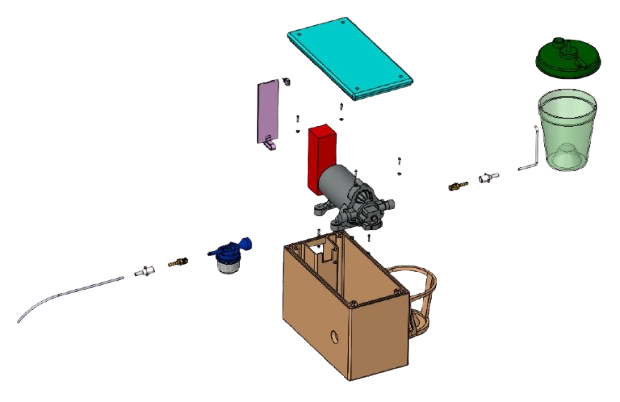
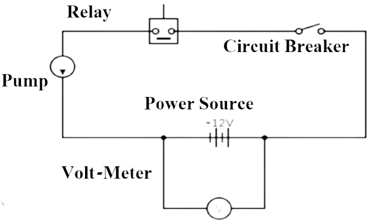
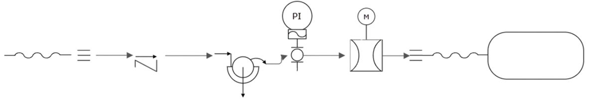
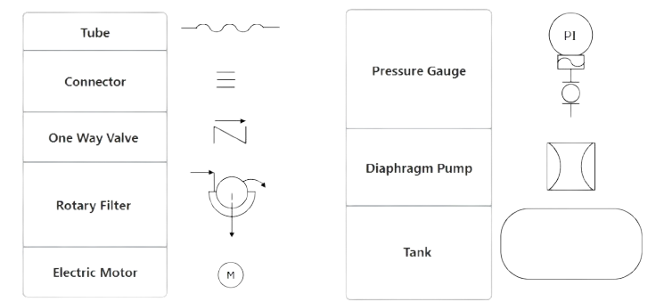

Here to save lives!
Since October 7, 2023, ongoing conflict has placed intense demands on the IDF to provide medical support across multiple combat fronts.
In the course of field operations, a critical need emerged for a reliable medical suction device to aid in the resuscitation of unconscious fighters. Operational reviews revealed that the current manual devices used by combat units are inadequate and fail to meet the necessary performance standards under battlefield conditions.
This project aims to develop a robust suction system capable of removing fluids and solid debris from the oral cavity of an unconscious individual. The system is designed to enable fast, efficient intervention by medical personnel while withstanding the rigors of operational environments.
Design Specification
The design specification outlines the technical and functional requirements of the device, ensuring it meets safety, usability, and performance standards for effective field use.
Reusability
Designed for repeated use, the system is built to resist breakage, water, and dust for long-lasting reliability.
Environmental Resistance
Engineered to withstand extreme conditions from -20°C to 50°C, with up to 95% relative humidity and exposure to UV radiation.
Portability
Compact and lightweight at under 3 kg with dimensions of 20×25×15 cm, ideal for transport in a tactical vest.
Performance
Delivers a powerful suction rate of 30 liters per minute and a vacuum pressure of up to 550 mmHg.
Power and Charging
Provides 4–6 hours of continuous operation with quick-charging capabilities and field-replaceable batteries.
Maintenance
Designed for easy upkeep with readily available spare parts.
Secretion Storage
Includes secure and hygienic options for storing collected secretions.
Filtration
Features a one-way valve to prevent backflow and a built-in filtration system to block particles from entering the device body.
Cost
Each unit is expected to be priced at approximately $400.
System Components
A comprehensive overview of all key components used in the device, including electrical, mechanical, and fluid-handling parts essential for operating.
Diaphragm Pump
The Seaflo 33-Series pump is a 3-chamber diaphragm, positive displacement pump that delivers up to 11.4 liters per minute and an integrated pressure switch for automatic on-demand operation. It includes a rubber mounting base for anti-vibration and low-noise performance, as well as built-in protection features such as overload current protection and temperature protection.
One Way Liquid Valve
A one-way liquid valve is incorporated into the pump to ensure unidirectional fluid flow, preventing backflow and maintaining consistent suction pressure during operation.
Filter and Connectors
Standard mesh filter is integrated into the fluid line to prevent debris from entering the pump and ensure consistent suction performance, while durable connectors provide secure, leak-free attachment between tubing and system components.
Battery
The 5200mAh 11.1V LiPo battery pack delivers high energy density and stable power for portable operation, with a XT60 connector for secure, efficient connectivity. Designed with advanced low internal resistance for consistent voltage throughout use, it supports high-performance applications and stable simultaneous discharges. Backed by ISO9001, MSDS, and UN38.3 certifications, the battery meets strict safety standards.
Waste Collection Container
The waste collection container safely stores fluids and secretions during suction, designed for easy removal, cleaning, and sterilization to maintain hygiene and prevent contamination.
Fastening Straps
Adjustable fastening straps allow the device to be securely attached to the patient or caretaker, providing comfort and stability during use while accommodating different body sizes and positions.
Power Switch
The power switch provides a simple and reliable means to turn the device on and off, ensuring user control, functionality and safety.
Voltage Gauge
The voltage gauge offers precise monitoring of the device’s battery voltage, helping users track power status and plan timely recharging to maintain optimal operation.
Pressure Gauge
The pressure gauge provides accurate real-time measurement of suction pressure, enabling users to monitor and adjust the device to ensure patient safety and optimal performance.
Schematics
Electrical Schematic
The electrical schematic illustrates the configuration and interconnection of all electrical components within the suction device, including the power supply, motor control, and safety features.
Hydraulic Schematic
The hydraulic schematic details the fluid flow pathways, valves, pump, and suction components, providing a visual representation of how negative pressure is generated and regulated within the device.
 Calculations and Analyses
We performed strength and thermal (hot/cold) analyses using SolidWorks Simulation to validate the design's reliability. Based on all simulations, the results demonstrate a safety factor of at least 1.43, confirming that the design meets structural and environmental performance requirements.
Strength Test
In the strength analysis, we evaluated the mechanical stresses acting on the body during normal operation, as well as the impact forces resulting from a drop test from a height of 1.5 meters. As shown in the simulation results, the maximum von Mises stress reached approximately 7.56 × 10⁷ N/m², while the material's yield strength is 2.75 × 10⁸ N/m², resulting in a safety factor of 3.64. This confirms that the structure can safely withstand typical usage and accidental impacts, with a significant safety margin.
Thermal Test
In the thermal analysis, we examined the effects of exposure to temperatures ranging from -20 °C to 50 °C on the body material. The simulation indicated that the maximum stress due to thermal expansion (50 °C) was approximately 1.1 × 10⁸ N/m², yielding a safety factor of 2.5, while the maximum stress due to thermal contraction (-20 °C) reached 1.93 × 10⁸ N/m², resulting in a safety factor of 1.43. Both are below the material's yield strength, demonstrating that the design maintains its structural integrity under both high and low temperature conditions, ensuring reliable performance in varying environmental environments.
Team
We are Mechanical Engineering students in the final year of our Bachelors degree. This webpage is submitted as part of our final project at Tel Aviv University.